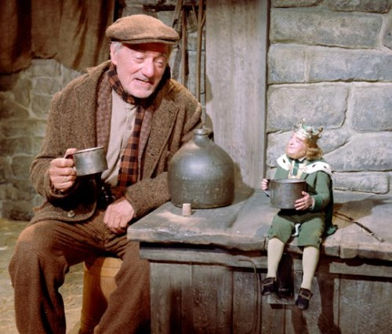

9th
March
2007
It’s the Banshee!
Saint Patrick’s Day is coming up — that means it’s nearly time for one of my very favorite movies: Darby O’Gill and the Little People. Darby O’Gill is a live-action Disney film from 1959. It doesn’t get as much attention as I think it should.

Darby O’Gill fiddles a tune for the Leprechauns, ©Disney
Reasons you should watch the Darby O’Gill and the Little People DVD:
- It has a pre-James Bond Sean Connery, in his first major film role.
- Sean Connery sings.
- Albert Sharpe as Darby O’Gill is the most inspired bit of casting, ever.
- The special effects are astounding — especially considering they didn’t have computers or blue screens to work with.
- Drinking, and whiskey, are openly celebrated — the high point is a drinking song with Darby O’Gill and the King of the Leprechauns.
- There are only a handful of extras on the DVD, but they’re excellent:
- A documentary on how they did the special effects, which is mind-blowing, in both its ingenuity and its simplicity
- “I Captured the King of the Leprechauns” — a whole black & white episode of the Disneyland TV show, with Walt Disney himself going to Ireland on the advice of his actor friend Pat O’Brien, where he meets Darby O’Gill, and talks the King of the Leprechauns into being in his movie.
- It’s just a damned fine little movie.

Darby O’Gill and King Brian share a jug of whiskey, ©Disney
Darby O’Gill and King Brian share a jug of whiskey, ©Disney
 Darby O’Gill and the Little People [Amazon.com]
Darby O’Gill and the Little People [Amazon.com]

I’d practically forgotten about this one. I was a huge fan of the Disney live action films
back in the 90′s. Granted, I was more of a Hayley Mills/Jodie Foster fan. But Darby O’Gill
certainly was a hoot. Have to pick up a copy this month.
posted on March 9th, 2007 at 3:57 pm
Have you ever seen The Gnomemobile? It stars the same two kids from Mary Poppins (the film even bills them as “The Mary Poppins Kids”!), and it seems to be trying to be Darby O’Gill, but it’s really terrible. It came out in 1967. It’s just awful, but I’ve got a soft spot for terrible old Disney films almost as much as I’ve got a soft spot for the really good ones.
posted on March 10th, 2007 at 1:08 pm
[...] me pot o’ gold!, blah blah blah, the end. Unless you’re a Rankin/Bass diehard, go watch Darby O’Gill and the Little People [...]
posted on March 17th, 2007 at 11:30 am
[...] Darby O’Gill and the Little People junkyardclubhouse.com [...]
posted on July 5th, 2011 at 7:32 pm
[...] It’s the Banshee! » Junkyard ClubhouseMar 9, 2007 … Darby O’Gill is a live-action Disney film from 1959. It doesn’t … 3 On March 17th, 2007, More Absurd Irish-ish Loot » Junkyard Clubhouse said: … [...]
posted on September 12th, 2012 at 8:34 am